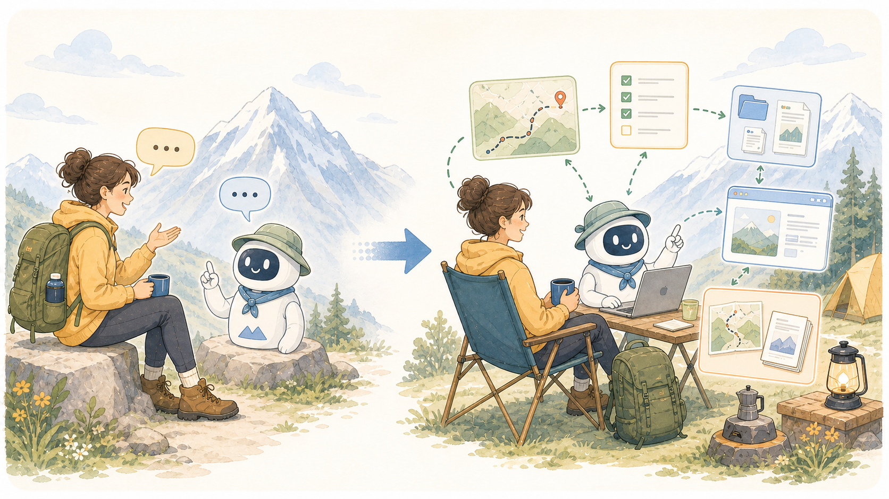

1 焦らない
ニュースの速さより、自分の仕事での実体験を優先する。
SLIDE OUTPUT
AIの歩き方 2026年8月最新版
1 / 39
AI SUMMER SCHOOL / AUGUST 2026
知っておくべき基礎知識
まず安心してほしいこと
AIのニュースは速いですが、すべてを追う必要はありません。 いちばん大事なのは、自分の仕事で使ってみて、「本当に楽になった」という小さな成功体験を作ることです。
追いかけなくていい
まず積み上げる
AI初心者に伝えたいこと
ニュースの速さより、自分の仕事での実体験を優先する。
ツールありきではなく、何を楽にしたいかから逆算する。
SNSの煽りや「簡単に稼げる」より、地に足のついた業務改善を見る。
AI活用で一番大切なのは、振り回されることではなく、自分の課題に向き合うことです。
目次
流行に振り回されず、自分の課題からAIを使う視点を整える
仕組みと、できること・できないこと
まずはチャット、次にエージェントへの入口をつかむ
チャットからAIエージェントへ
3大リスクと安全対策
今日から使えるAIとの働き方 3ステップ
巻末付録として、初中級者がつまずきやすい用語を FAQ 形式でまとめています。
INTRODUCTION
流行を追うためではなく、自分の仕事で使える入口を見つけるための序章です。
実務での考え方
何が重いか、どこが詰まるかを見る
要約する / 下書きする / 整理する
事実確認 / 判断 / 微調整を行う
使える形で残し、次にもつなげる
大事なのは、最新機能を使っているかどうかではなく、 その課題が本当に軽くなったかどうかです。
この資料で目指すこと
AIがどう考え、どこで間違えやすいかを理解する。
自分の業務に置き換えて、どこで役立つかを考える。
1業務×1AIの小さな実践へつなげる。
全部を一気に変える必要はありません。まずは 1業務 × 1AI からで十分です。
CHAPTER 01
AIは「答えを知っている辞書」ではなく、「超・高精度な連想ゲームマシーン」です。
1-1
いちばん大事なのは、講義中に全部覚えることではなく、自分の仕事に持ち帰って一度試すことです。
1-2
LLMの学習には、GPU、巨大データセンター、莫大な電力、そして大規模な投資が必要です。 そのため、ゼロから作れるプレイヤーはかなり限られています。
OpenAI、Anthropic、Google、Meta などが先頭集団。
Alibaba、DeepSeek、ByteDance などが急速に追い上げている。
総合性能の世界首位争いより、安全な利用環境や国内LLMの試行で実装を進める流れが強い。
1-2
昔々あるところに…
次に来そうな言葉を、最も自然な順で並べる
それっぽい文章として返る
意味を完全に理解して答えている
膨大な学習結果をもとに、「前後につながりそうな言葉」を高精度で組み立てている
1-3
CHAPTER 02
文字だけではなく、画像やファイルも扱いながら、チャットの先の使い方へ広がっている時代です。
2-1
たとえるなら、ラジオから対面打ち合わせへ進化したイメージです。
2-2
万能型。日常会話、文章作成、アイデア出しの入口にしやすい。
長文読解、人間らしい文章、コード作成で選ばれやすい。
Google連携や最新情報の検索を含む流れで便利。
料金プラン
まず実験するには十分。最初の入口として使いやすい。
より深い実務に入るときに効く。月額数千円クラスが主流。
物足りなさを感じたタイミングで十分。
優先すべきなのは課金より実体験です。まずは無料版を使い倒し、壁を感じたら有料版へ進むのがいちばん無駄がありません。
※ ただし、入力内容は学習されることに注意
使い方の入口
サービスの層
どちらが上という意味ではありません。`土台を直接使うサービス` と `用途特化で使いやすくしたアプリ` の違い、と捉えると分かりやすいです。
CHAPTER 03
質問に答えるだけのAIではなく、ゴールを渡すと動き出すAIが中心になっています。
3-1

AIエージェントとは、質問に答えるだけでなく、ゴールを受け取ると、必要な手順を考え、ツールを使い、確認しながら進めるAIです。
3-2
1回ごとの頼み方を工夫する
前提情報や資料をそろえて渡す
ツール、権限、安全ルールを整える
実行、確認、修正を自律的に繰り返す
いま前線で重視されているのは、上手な一文より、AIが安全に動ける仕組みを設計することです。人は Human in the loop から Human on the loop へ移りつつあります。
3-3
Human in the loop
Human on the loop
速いループはAIが数分単位で回し、中くらいのループで人が方向修正し、長いループで利用者や現場の声を受けて方針を更新します。
3-4
AIと競争するより、AIを動かす側へ回る。実務ではこの見方のほうが、長く効く考え方になります。
CHAPTER 04
AIは「おっちょこちょいな新人部下」くらいの感覚で扱うと、ちょうどよく安全です。
リスク1
AIは「事実を検索して答える」のではなく、 「前に続く言葉として自然なもの」を確率で組み立てています。
対策
リスク2
リスク3
特定の作家やアーティストの作風を、直接まねさせて商用利用すること。
画像、文章、音声の権利処理と、利用規約上の扱い。
公開前に人が見て、「誰かの権利を侵していないか」を最後に確認する。
社内AIで重要
RAG は、質問のたびに社内資料や最新データを検索して、 その内容をAIに見せながら回答させる仕組みです。
関連する社内資料を探す
AIにその資料を見せる
資料ベースで答えるので、嘘が減りやすい
CHAPTER 05
最初から全自動を目指さず、「1業務 × 1AI」から始めるのが一番うまくいきます。
Step 1
ゼロから書く負荷を減らす定番の入口。
読む時間を短縮し、返信方針を立てやすくする。
論点と次アクションを切り分ける。
資料の骨子を先に作ってもらう。
最初は1つのテーマに絞ったほうが精度が出やすく、あれもこれも一度にやらせようとすると回答が散って精度が落ちやすくなります。
Step 2
あなたは Web マーケターです。 30代の会社員に向けて、 新商品の魅力を伝える800字のブログの下書きを作ってください。 専門用語は避け、 導入で興味を引き、 最後は行動を促す一文で締めてください。
Step 2.5
頼み方を整える
資料、日時、対象者、過去文面を渡す
使えるツールやファイルを整える
返ってきたものを見て、直して、再度使う
1回で完璧を目指すより、少しずつ良くするほうが実務では強いです。
Step 3
AIがやる
人間がやる
実践まとめ
最初から全自動を目指さない。この感覚が、いちばん長く使えるコツです。
APPENDIX / FAQ
専門用語を丸暗記しなくても、「要するに何か」が腹落ちすれば十分です。
FAQ 1
一言: 言葉を操るAIのエンジン
たとえ: 世界中の図書館を読んだ、超・物知りな言葉の天才
一言: 自信満々のそれっぽい嘘
たとえ: 場をつなぐために話を作ってしまう、おしゃべりな人
FAQ 2
一言: AIにカンペを見せながら答えさせる仕組み
たとえ: マニュアルを開いた状態で受けるオープンブックテスト
一言: 文字だけでなく、画像・音声・動画も扱えること
たとえ: ラジオから対面打ち合わせへの進化
FAQ 3
質問に答えるだけではなく、ゴールに向けて自分で動くAI。
トークンは文字数の単位、コンテキストはAIの作業デスクの広さ。
プロンプトはその場の指示、ファインチューニングはAI自体の専門教育。
最後に
言葉を扱うAIのエンジン
カンペを見せながら答えさせる仕組み
ゴールを渡すと動き出すAIアシスタント
「質問するツール」から「共に働くパートナー」へ。この変化を理解すると、AIの使い方が一段変わります。